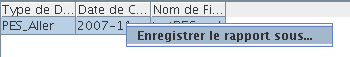

Rapport de Contrôle
On accède aux recherches sur Rapport par le menu Recherche / Rapport de Contrôle / Rapport

Ces recherches renvoient toujours une liste de Rapports.
Les critères de recherche possibles sont :
Permet de filtrer sur le type de document contrôlé. A ce jour, seuls les documents de type PES Aller sont contrôlables.
Permet de filtrer sur la date où a été efféctué le contrôle.
Afin de pouvoir transmettre au Pôle Dématérialisation les rapports d'analyse de documents, il est possible, depuis le résultat de recherche, par un clic-droit, d'enregistrer le rapport. Ceci écrit un document XML réimportable dans Xemelios.
